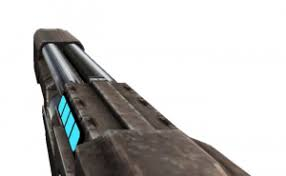

Дробовик - второе оружие, которое получает игрок. Обладает высокой убойной силой, но на дальних расстояниях просто бесполезно. Многие игроки недооценивают его, но в связке с хуком это скрытый потенциал.
Все дробовики имеют одинаковый темп стрельбы и наносимый урон, но все они отличаются альтернативной атакой.
1. Обычный дробовик
Начальный дробовик обладает следующей альтернативной атакой: при удержании ПКМ накапливается шкала, которая при отпуске мыши выстреливает единый заряд, который взрывается при любом контакте. Чем дольше чардж - тем дальше полёт. В летящий заряд можно выстрелить из револьвера, и в таком случае увеличится площадь поражения и урон от заряда.
Также все дробовики обладают уникальной фичей: если одновременно нажать ЛКМ чтобы выстрелить и "F" чтобы парировать, то игрок выстрелит и своим ударом придаст выстрелу убойную силу: одна пуля становится красной, но летит также, как и остальные. Однако при контакте взрывается и наносит неслабый урон. Очень эффективно использовать эту способность в связке с хуком. Также если взять в руки дробовик и руку-дробовик, то при одновременном нажатии ЛКМ и удержании "F" персонаж сделает 4 достаточно быстрых выстрела, что сильно помогает расчищать себе путь в узких коридорах против слабых противников.
2. Дробовик с чарджем
Очень специфическая модификация. При удержании ПКМ можно заряжать выстрел (максимум до 4 раз), и в таком случае урон будет выше, но с каждой последующей зарядкой дробовика точность будет падать в геометрической прогрессии. Также если зарядить дробовик до предела, то взрыв произойдёт у Вас в руках, и вам снесётся 50 здоровья (это много). Эффективна данная модификация только против одиночных и живучих противников. Очень эффективно в паре с крюком.
3. Дробовик с бензопилой
Достаточно тяжёлая для освоения модификация. При удерживании ПКМ персонаж заводит и держит в рабочем состоянии бензопилу на дробовике (звучит дико, но выглядит стильно), которая при тесном контакте наносит хороший урон, а при отпуске выбрасывает её на цепи, а та в свою очередь летит во врагов, а после возвращается назад как бумеранг. Также если ловить тайминги, то можно отбивать синей рукой пилу обратно во врагов, тем самым увеличивая её время действия.